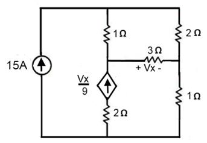
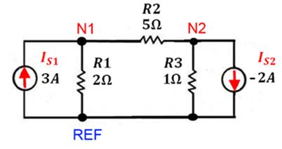
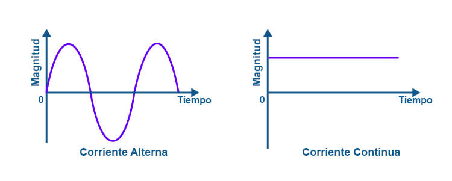

Telecomunicaciones
Telecomunicación es toda transmisión, emisión o recepción, de signos, señales, escritos, imágenes, sonidos o informaciones de cualquier naturaleza por hilo, radioelectricidad, medios ópticos u otros sistemas electromagnéticos
Formas de telecomunicaciones
Analisis de nodos
Telecomunicación es toda transmisión, emisión o recepción, de signos, señales, escritos, imágenes, sonidos o informaciones de cualquier naturaleza por hilo, radioelectricidad, medios ópticos u otros sistemas electromagnéticos
ejemplos nodos
 Corriente alterna
Una corriente alterna puede definirse como una corriente que cambia su magnitud y polaridad a intervalos regulares de tiempo. También puede definirse como una corriente eléctrica que cambia o invierte su dirección repetidamente, a diferencia de la corriente continua o CC, que siempre fluye en una sola dirección, como se muestra a continuación.
ejemplos corriente
Circuitos RLC
Un circuito RLC es un circuito eléctrico que consiste de una resistencia (R), un inductor (L) y un condensador (C), conectados en serie o en paralelo. El nombre del circuito se deriva de las letras en inglés que se utilizan para denotar los componentes constituyentes de este circuito, donde la secuencia de los componentes puede variar según el RLC.